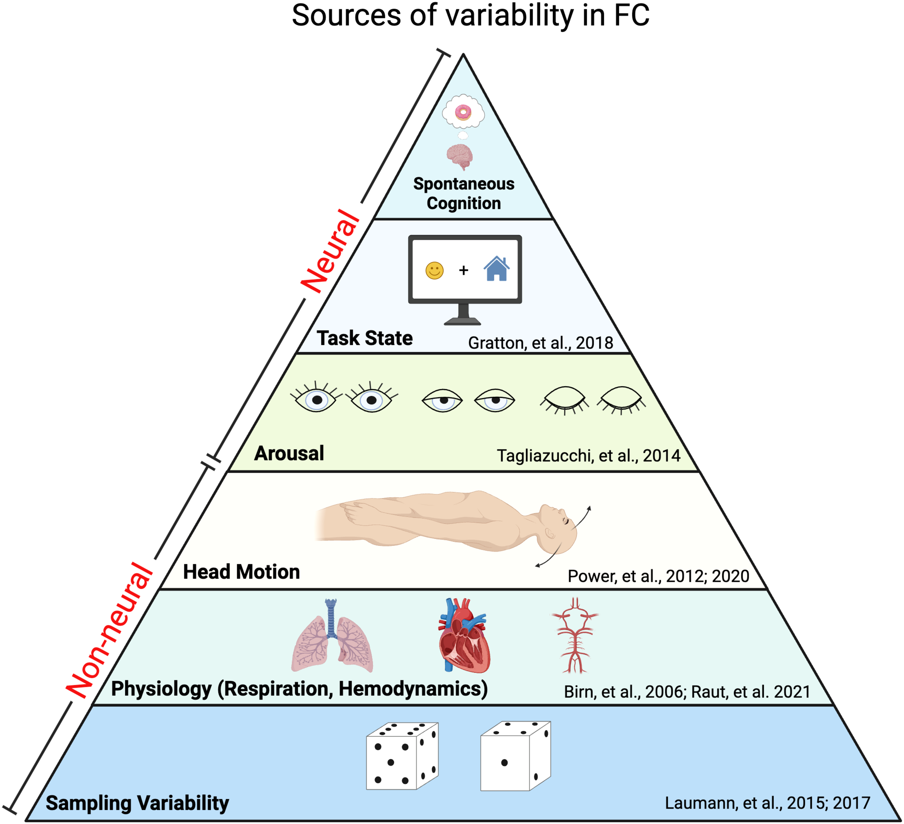
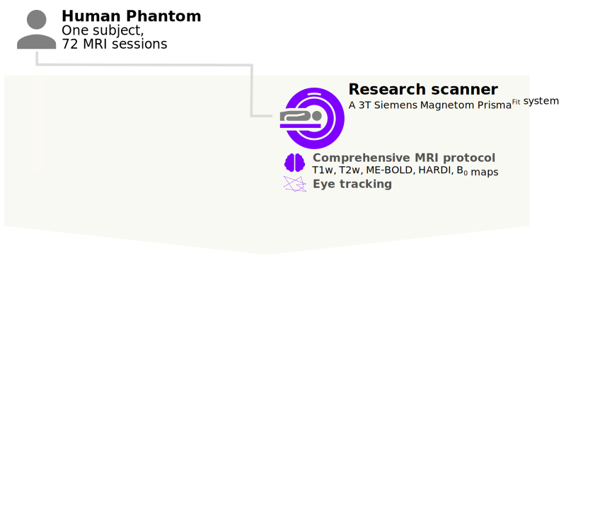
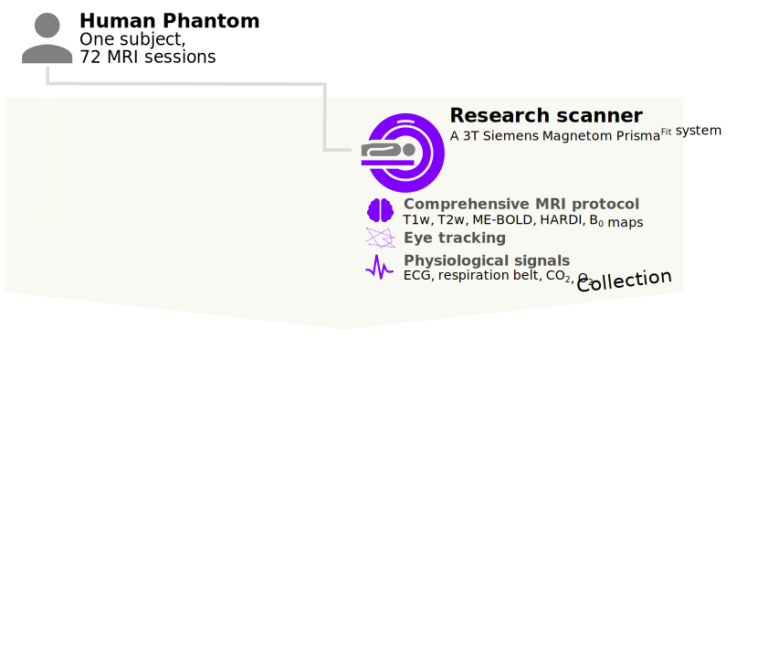
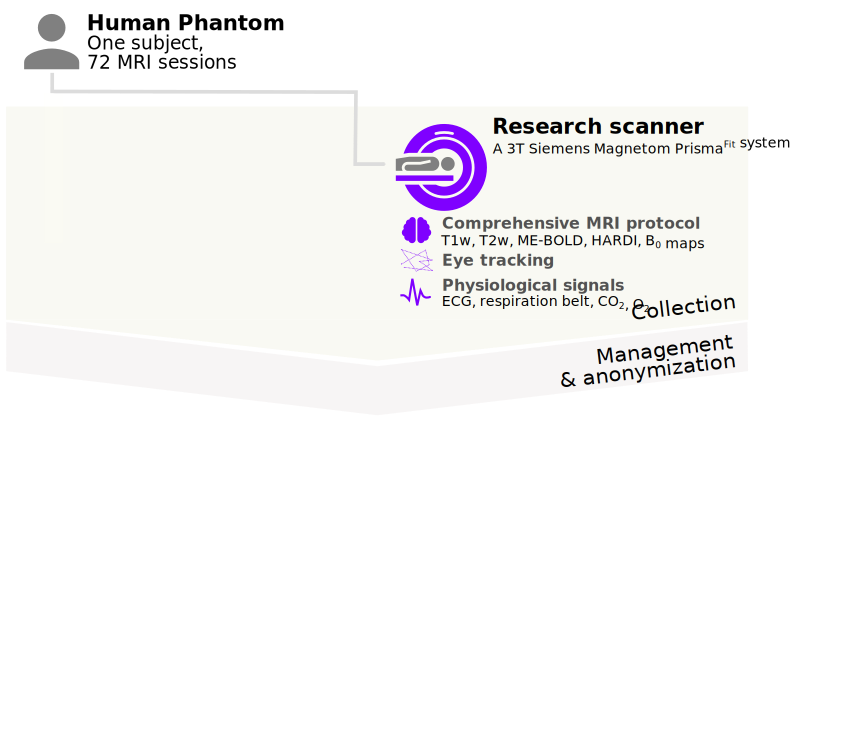
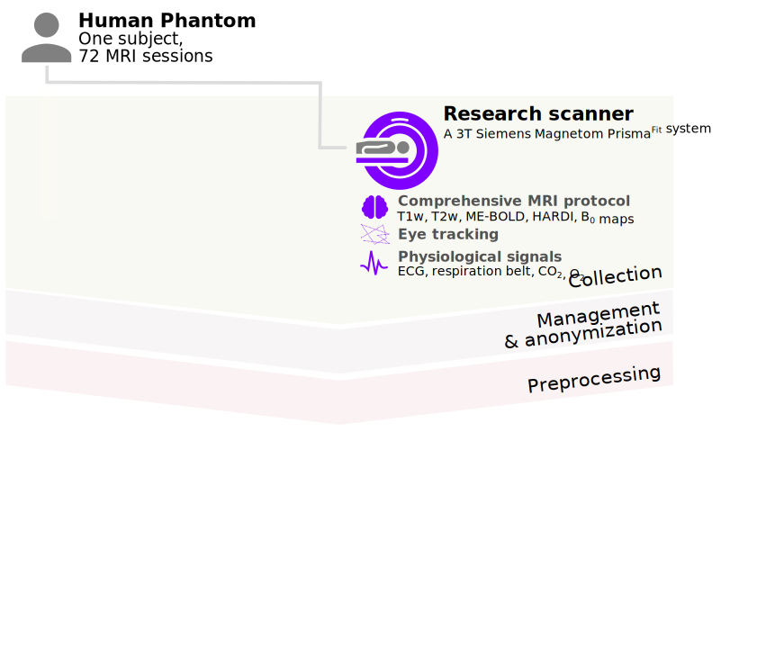
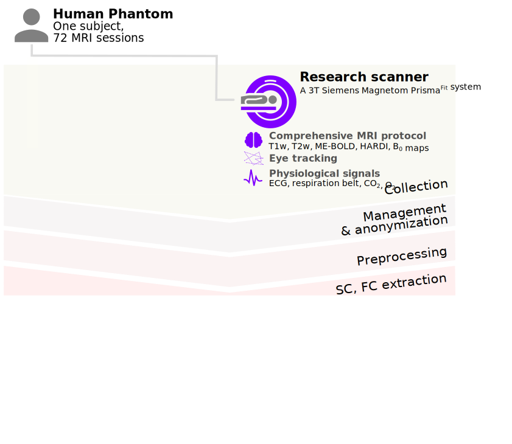

name: title layout: true class: center --- layout: false count: false .center[ <a href="https://oesteban.github.io/talks/20250306/"> <br /> https://oesteban.github.io/talks/20250306/ </a> <br /> <br /> ## Harnessing the reliability of neuroimaging bottom-up Oscar Esteban <<code>phd@oscaresteban.es</code>> <br /> ### Presentation at Idiap Research Institute — 06.03.2025 ] ??? --- name: newsection layout: true .perma-sidebar[ <p class="rotate"> <a rel="license" href="http://creativecommons.org/licenses/by/4.0/"><img alt="Creative Commons License" style="border-width:0; height: 20px; padding-top: 6px;" src="https://i.creativecommons.org/l/by/4.0/88x31.png" /></a> <span style="padding-left: 10px; font-weight: 600;">Introducing Oscar Esteban | 06.03.2025</span> </p> ] --- .boxed-content.large.no-bullet[ * <i class="fa-solid fa-circle-right"></i> .larger[**Context**] .indent[ .gray-text[Structural and functional connectivity of the brain] ] * <i class="fa-solid fa-circle-right"></i> .larger[**The Human Connectome PHantom (HCPh)**] .indent[ .gray-text[A New Standard for Dense, Multi-Modal Neuroimaging] ] * <i class="fa-solid fa-circle-right"></i> .larger[**Major achievements**] .indent[ .gray-text[Standardization in neuroimaging] .gray-text[Open Science advocacy, training, and mentorship] ] * <i class="fa-solid fa-circle-right"></i> .larger[**Grant timeline**] ] ??? (1) The originality and significance of one of your scientific works (approximately 10 minutes). (2) Two of your other major achievements (as defined by the SNSF), highlighting selected works from your career. These achievements can encompass contributions to knowledge generation, innovation, research advancement, and the development and support of peers and the broader research community. When describing these achievements, please consider your specific role, the work or findings and their impact on science or society, and your application of skills and new methods to foster innovation, new ideas, and projects (approximately 7 minutes). (3) Your research grant submission plan for the first two years, including potential collaborations with non-academic partners (approximately 3 minutes). --- count:false .boxed-content.large.no-bullet[ * <i class="fa-solid fa-circle-right"></i> .larger[**Context**] .indent[ .gray-text[Structural and functional connectivity of the brain] ] * <i class="fa-solid fa-circle-right fa-solid-dim"></i> .larger.dim[**The Human Connectome PHantom (HCPh)**] .indent[ .dimgray-text[A New Standard for Dense, Multi-Modal Neuroimaging] ] * <i class="fa-solid fa-circle-right fa-solid-dim"></i> .larger.dim[**Major achievements**] .indent[ .dimgray-text[Standardization in neuroimaging] .dimgray-text[Open Science advocacy, training, and mentorship] ] * <i class="fa-solid fa-circle-right fa-solid-dim"></i> .larger.dim[**Grant timeline**] ] ??? --- # The research workflow of connectivity analyses .boxed-content[ <img src="../../../talks/assets/neuroimaging-workflow-large.svg" alt="workflow" style="width: 100%" /> .center[ [Esteban et al., (2020)](http://doi.org/10.1038/s41596-020-0327-3); [Niso et al., (2022)](https://doi.org/10.1016/j.neuroimage.2022.119623) ] ] ??? --- count:false # The research workflow of connectivity analyses .boxed-content[ <img src="../../../talks/assets/neuroimaging-workflow-1.svg" alt="workflow" style="width: 100%" /> .center[ [Esteban et al., (2017)](https://doi.org/10.1371/journal.pone.0184661); [Provins et al., (2023)](https://doi.org/10.3389/fnimg.2022.1073734); <br /> [Provins et al., (2024, *Stage 2 RR under review*)](https://doi.org/10.1101/2024.10.11.617777) [Hagen et al., (2024, *under review*)](https://doi.org/10.1101/2024.10.21.619532) ] <br /> .no-bullet[ * .larger[<i class="fa-solid fa-clipboard-list"></i> Run the **MRI experiment** following Standard Operating Procedures (SOPs)] * <i class="fa-solid fa-folder-tree"></i> .larger[**Standardized data structure** (BIDS—Brain Imaging Data Structure)] * .larger[<i class="fa-solid fa-square-check"></i> **QA/QC** (Quality assurance / control)] ] ] ??? --- count:false # The research workflow of connectivity analyses .boxed-content[ <img src="../../../talks/assets/neuroimaging-workflow-2.svg" alt="workflow" style="width: 100%" /> .center[ [Esteban et al., (2019)](https://doi.org/10.1038/s41592-018-0235-4); [Ciric et al., (2022)](https://doi.org/10.1038/s41592-022-01681-2); [Adebimpe et al., (2022)](https://doi.org/10.1038/s41592-022-01458-7) ] <br /> .no-bullet[ * .larger[<i class="fa-solid fa-smog"></i> Detection of **nuisance sources**] * .larger[<i class="fa-solid fa-magnifying-glass-location"></i> Spatiotemporal **location** of signals] * .larger[<i class="fa-solid fa-location-crosshairs"></i> Definition of **brain units** of analysis (regions)] ] ] ??? --- count:false # The research workflow of connectivity analyses .boxed-content[ <img src="../../../talks/assets/neuroimaging-workflow-3.svg" alt="workflow" style="width: 100%" /> .center[ [Thompson et al., (2021, *under review*)](https://doi.org/10.1101/2021.01.16.426941); [Rodrigue et al., (2021)](https://doi.org/10.1016/j.bpsc.2020.12.002); [Li et al., (2024)](https://doi.org/10.1038/s41562-024-01942-4) ] ] .pull-right[ <img src="../../../talks/assets/matrix-fc.png" alt="matrix-fc" style="width: 20%" /> <br /> **Functional Connectivity (FC)** <br /> .gray-text[Synchronized BOLD co-variation between brain regions] ] .pull-left.align-right[ <img src="../../../talks/assets/matrix-sc.png" alt="matrix-fc" style="width: 20%" /> <br /> **Structural Connectivity (SC)** <br /> .gray-text[Tracked water diffusion pathways between brain regions] ] ??? --- count:false # The research workflow of connectivity analyses .boxed-content[ <img src="../../../talks/assets/neuroimaging-workflow-large.svg" alt="workflow" style="width: 100%" /> <br /> .no-bullet[ * .large[<i class="fa-solid fa-triangle-exclamation"></i> Alarming **analytical variability**:] * .larger[Structural MRI [[Maier-Hein et al., (2017)](https://doi.org/10.1038/s41467-017-01285-x)]] * .larger[Functional MRI [[Botvinik-Nezer et al., (2020)](https://doi.org/10.1038/s41586-020-2314-9)]] * .large[<i class="fa-solid fa-handshake-simple"></i> Incipient **standardization**] .larger[[[Esteban, (2025)](https://doi.org/10.1007/978-1-0716-4260-3_8)]] ] ] ??? --- # Beyond analytical variability .boxed-content[ .center[  [Laumann, Snyder, and Gratton (2024)](https://doi.org/10.1162/imag_a_00366) ] ] ??? --- count:false .boxed-content.large.no-bullet[ * <i class="fa-solid fa-circle-right fa-solid-dim"></i> .larger.dim[**Context**] .indent[ .dimgray-text[Structural and functional connectivity of the brain] ] * <i class="fa-solid fa-circle-right"></i> .larger[**The Human Connectome PHantom (HCPh)**] .indent[ .gray-text[A New Standard for Dense, Multi-Modal Neuroimaging] ] * <i class="fa-solid fa-circle-right fa-solid-dim"></i> .larger.dim[**Major achievements**] .indent[ .dimgray-text[Standardization in neuroimaging] .dimgray-text[Open Science advocacy, training, and mentorship] ] * <i class="fa-solid fa-circle-right fa-solid-dim"></i> .larger.dim[**Grant timeline**] ] ??? --- ## HCPh: An ultra-dense, calibration dataset .right-column3[ Time span: 6 weeks Functional and Structural Connectivity Comprehensive physio & eye tracking Emphasis on technical aspects: * fieldmaps * high-angular resolution, multishell DWI with doubled-orientations * multi-echo fMRI * positive-control task * breath-holding task Naturalistic movie (cognition state variability) Peer-reviewed pre-registration Personal involvement ] .left-column3[ <br /> ] --- count:false ## HCPh: An ultra-dense, calibration dataset .right-column3[ Time span: 6 weeks Functional and Structural Connectivity Comprehensive physio & eye tracking Emphasis on technical aspects: * fieldmaps * high-angular resolution, multishell DWI with doubled-orientations * multi-echo fMRI * positive-control task * breath-holding task Naturalistic movie (cognition state variability) Peer-reviewed pre-registration Personal involvement ] .left-column3[ <img src="../assets/hcph-01.svg" width="90%" /><br /> ] ??? --- count:false ## HCPh: An ultra-dense, calibration dataset .right-column3[ Time span: 6 weeks Functional and Structural Connectivity Comprehensive physio & eye tracking Emphasis on technical aspects: * fieldmaps * high-angular resolution, multishell DWI with doubled-orientations * multi-echo fMRI * positive-control task * breath-holding task Naturalistic movie (cognition state variability) Peer-reviewed pre-registration Personal involvement ] .left-column3[ <br /> ] ??? --- count:false ## HCPh: An ultra-dense, calibration dataset .right-column3[ Time span: 6 weeks Functional and Structural Connectivity Comprehensive physio & eye tracking Emphasis on technical aspects: * fieldmaps * high-angular resolution, multishell DWI with doubled-orientations * multi-echo fMRI * positive-control task * breath-holding task Naturalistic movie (cognition state variability) Peer-reviewed pre-registration Personal involvement ] .left-column3[ <br /> ] ??? --- count:false ## HCPh: An ultra-dense, calibration dataset .right-column3[ Time span: 6 weeks Functional and Structural Connectivity Comprehensive physio & eye tracking Emphasis on technical aspects: * fieldmaps * high-angular resolution, multishell DWI with doubled-orientations * multi-echo fMRI * positive-control task * breath-holding task Naturalistic movie (cognition state variability) Peer-reviewed pre-registration Personal involvement ] .left-column3[ <br /> ] ??? --- count:false ## HCPh: An ultra-dense, calibration dataset .right-column3[ Time span: 6 weeks Functional and Structural Connectivity Comprehensive physio & eye tracking Emphasis on technical aspects: * fieldmaps * high-angular resolution, multishell DWI with doubled-orientations * multi-echo fMRI * positive-control task * breath-holding task Naturalistic movie (cognition state variability) Peer-reviewed pre-registration Personal involvement ] .left-column3[ <br /> ] ??? --- count:false ## HCPh: An ultra-dense, calibration dataset .right-column3[ Time span: 6 weeks Functional and Structural Connectivity Comprehensive physio & eye tracking Emphasis on technical aspects: * fieldmaps * high-angular resolution, multishell DWI with doubled-orientations * multi-echo fMRI * positive-control task * breath-holding task Naturalistic movie (cognition state variability) Peer-reviewed pre-registration Personal involvement ] .left-column3[ <br /> ] ??? --- count:false ## HCPh: An ultra-dense, calibration dataset .right-column3[ Time span: 6 weeks Functional and Structural Connectivity Comprehensive physio & eye tracking Emphasis on technical aspects: * fieldmaps * high-angular resolution, multishell DWI with doubled-orientations * multi-echo fMRI * positive-control task * breath-holding task Naturalistic movie (cognition state variability) Peer-reviewed pre-registration Personal involvement ] .left-column3[ <br /> ] ??? --- count:false ## HCPh: An ultra-dense, calibration dataset .right-column3[ Time span: 6 weeks Functional and Structural Connectivity Comprehensive physio & eye tracking Emphasis on technical aspects: * fieldmaps * high-angular resolution, multishell DWI with doubled-orientations * multi-echo fMRI * positive-control task * breath-holding task Naturalistic movie (cognition state variability) Peer-reviewed pre-registration Personal involvement ] .left-column3[ <img src="../assets/hcph-08.svg" width="90%" /><br /> ] ??? --- count:false ## HCPh: An ultra-dense, calibration dataset .right-column3[ Time span: 6 weeks Functional and Structural Connectivity Comprehensive physio & eye tracking Emphasis on technical aspects: * fieldmaps * high-angular resolution, multishell DWI with doubled-orientations * multi-echo fMRI * positive-control task * breath-holding task Naturalistic movie (cognition state variability) Peer-reviewed pre-registration Personal involvement ] .left-column3[ <img src="../assets/hcph-09.svg" width="90%" /><br /> ] ??? --- count:false ## HCPh: An ultra-dense, calibration dataset .right-column3[ Time span: 6 weeks Functional and Structural Connectivity Comprehensive physio & eye tracking Emphasis on technical aspects: * fieldmaps * high-angular resolution, multishell DWI with doubled-orientations * multi-echo fMRI * positive-control task * breath-holding task Naturalistic movie (cognition state variability) Peer-reviewed pre-registration Personal involvement ] .left-column3[ <img src="../assets/hcph-10.svg" width="90%" /><br /> ] ??? --- count:false ## HCPh: An ultra-dense, calibration dataset .right-column3[ Time span: 6 weeks Functional and Structural Connectivity Comprehensive physio & eye tracking Emphasis on technical aspects: * fieldmaps * high-angular resolution, multishell DWI with doubled-orientations * multi-echo fMRI * positive-control task * breath-holding task Naturalistic movie (cognition state variability) Peer-reviewed pre-registration Personal involvement ] .left-column3[ <img src="../assets/hcph-full.svg" width="90%" /><br /> ] ??? --- ## HCPh: Registered-report driven .right-column3[ .larger.center[ .large[**Stage 1 RR**] <br /> Nature Methods <a href="https://doi.org/10.17605/OSF.IO/VAMQ6"><img src="../ISMRM2024/images/qr-RR.svg" alt="workflow" style="width: 85%" /> Provins et al., (2023)</a> ] ] .left-column3[ <img src="../assets/hcph-full.svg" width="90%" /><br /> ] --- # Why the Registered Report Approach .boxed-content.large.no-bullet[ * <i class="fa-solid fa-circle-right"></i> .larger[**Pre-Approved Study Design**] .indent[ .gray-text[Hypotheses, protocols, and analyses peer-reviewed before data collection] ] * <i class="fa-solid fa-circle-right"></i> .larger[**Transparency & Rigor**] .indent[ .gray-text[Minimizes biases, “p-hacking,” and the garden of forking paths] ] * <i class="fa-solid fa-circle-right"></i> .larger[**Drawbacks**] .indent[ .gray-text[Challenging pre-registration report preparation, slow review process] ] ] ??? --- # Comparison with MyConnectome <br /> <br /> .boxed-content[ | | **MyConnectome** | **HCPh** | | ------------------ | -------------------------------------------------------------------------- | ----------------------------------------------------------------------------- | | **Subject** | Russ Poldrack | Oscar Esteban | | **Sessions** | ~100 | 72 | | **Duration** | ~2 years | ~6 weeks | | **Objective** | Single-brain FC changes over time | FC & SC reliability | | **Diffusion MRI** | Single-shell protocol (only some sessions) | Comprehensive (every session) | | **Functional MRI** | ~10 minutes/session resting-state fMRI + some tasks | ~20 minutes/session (naturalistic movie fMRI + QA/QC tasks) | | Publication | [Poldrack et al., (2015)](https://doi.org/10.1038/ncomms9885) | RR [Provins et al., (2023)](https://doi.org/10.6084/m9.figshare.19579873.v1) | ] --- # HCPh: Study Outcomes .boxed-content.no-bullet.pad-top[ * .large.pad-top[<i class="fa-solid fa-database"></i> One-of-a-kind, open **dataset**] .indent[ .gray-text[Thoroughly documented, with open [Standard Operating Procedures (SOPs)](https://www.axonlab.org/hcph-sops)] ] * .large[<i class="fa-solid fa-chart-bar"></i> Within-scanner **reliability characterization**] .indent[ .gray-text[PCA-based modeling of FC residuals] .gray-text[Bayesian modeling of SC] ] * .large[<i class="fa-solid fa-scale-balanced"></i> Between-scanner **agreement**] .indent[ .gray-text[One research scanner vs. two clinical scanners] ] ] ??? Slide notes: - Emphasize how HCPh can serve as a “gold standard” for comparing different methods and scanners. - Highlight the open-access nature, which encourages broad adoption and secondary analyses. --- # HCPh's SOPs .boxed-content[ <iframe src="https://www.axonlab.org/hcph-sops/" width="100%" height="510px" style="border: 0; margin-top: 15px"></iframe> .center.small[https://www.axonlab.org/hcph-sops/] ] --- # HPCh: Significance <br /> .boxed-content.no-bullet[ * .large.pad-top[<i class="fa-solid fa-ruler"></i> Complement standardization with **calibration**] .indent[ .gray-text[Provide normative distributions of SC and FC (prior knowledge)] .gray-text[An approach to design *calibrated* studies, potentially with the same or new **human phantoms**] ] * .large[<i class="fa-solid fa-route"></i> Methodological **advance**] .indent[ .gray-text[Removal of physiological variability, artifacts, etc.] .gray-text[Between-scanner agreement of measurements (other than connectivity)] ] * .large[<i class="fa-solid fa-building-columns"></i> A **foundational dataset**] .indent[ .gray-text[SC & FC training dataset] .gray-text[Fully-open, ideal for courses and training] ] ] ??? --- count:false .boxed-content.large.no-bullet[ * <i class="fa-solid fa-circle-right fa-solid-dim"></i> .larger.dim[**Context**] .indent[ .dimgray-text[Structural and functional connectivity of the brain] ] * <i class="fa-solid fa-circle-right fa-solid-dim"></i> .larger.dim[**The Human Connectome PHantom (HCPh)**] .indent[ .dimgray-text[A New Standard for Dense, Multi-Modal Neuroimaging] ] * <i class="fa-solid fa-circle-right"></i> .larger[**Major achievements**] .indent[ .gray-text[Standardization in neuroimaging] .gray-text[Open Science advocacy, training, and mentorship] ] * <i class="fa-solid fa-circle-right fa-solid-dim"></i> .larger.dim[**Grant timeline**] ] ??? --- # Standardization in neuroimaging—NiPreps .boxed-content[ <br /> .larger.center[ "*analysis-grade*" data <i class="fa-solid fa-circle-right"></i> data **directly consumable by analyses** ] .pull-left[ <br /> <br /> *Analysis-grade* data is an analogy to the concept of "*sushi-grade (or [sashimi-grade](https://en.wikipedia.org/wiki/Sashimi)) fish*" in that both are: .large[<i class="fa-solid fa-circle-right"></i> **minimally preprocessed**,] and .large[<i class="fa-solid fa-circle-right"></i> **safe to consume** directly.] ] .pull-right.center[ <img src="../../../talks/assets/nipreps-transparent.png" width="100%" /> <a href="https://www.nipreps.org"><img src="../../../talks/assets/qr-nipreps-url.svg" width="40%" /><br /> www.nipreps.org</a> ] ] --- <p align="center"> <img src="../../../talks/assets/nipreps-chart.png" width="63%" /><br /> <em>NiPreps</em> (<a href="https://doi.org/10.31219/osf.io/ujxp6">Esteban et al., 2020</a>) </p> --- # Standardization in neuroimaging—impact .boxed-content.larger.no-bullet[ * .large[<i class="fa-solid fa-hands-clapping"></i> **Not just wide adoption**] .indent[ .gray-text[Relevant works: [Caucheteux, Gramfort & King, (2023)](https://doi.org/10.1038/s41562-022-01516-2), [Tozzi et al., (2024)](https://doi.org/10.1038/s41591-024-03057-9), [Hyon et al., (2020)](https://doi.org/10.1073/pnas.2013606117), [Yamashita et al., (2020)](https://doi.org/10.1371/journal.pbio.3000966).] .gray-text[Industry: [Flywheel's gears for *MRIQC* and *fMRIPrep*](https://flywheel.io/insights/blog/comprehensive-support-bids#:~:text=The%20Flywheel%20Gear%20Exchange%20currently,to%20download%20your%20entire), [Amazon Web Services featured *fMRIPrep*](https://aws.amazon.com/blogs/opensource/fmri-data-preprocessing-aws-fmriprep/#:~:text=itself,efforts%20on%20preprocessing%20fMRI%20data), [QMENTA's RS fMRI tool derived from *fMRIPrep*](https://catalog.qmenta.com/tool/resting-state-fmri#:~:text=Catalog%20catalog,Networks%3B%20%E2%80%A2%20Salience%20Network)] ] * .large[<i class="fa-solid fa-people-group"></i> **Built a Lasting Community**] .indent[ .gray-text[100+ researchers engaged in the community worldwide] .gray-text[Community is critical to provide a footing for standardization (following BIDS' experience)] ] * .large[<i class="fa-solid fa-industry"></i> **DevOps-inspired standardization**] .indent[ .gray-text[Reducing the gap between research and application reversing the transference flow] ] ] ??? - Focus on two distinguishing aspects of NiPreps: 1. The **community** that grew organically outside of a single lab, necessitating robust governance and licensing strategies. 2. The **standardization approach** to boost reliability, complementing the repetition-based approach of HCPh. - Emphasize the “reverse tech transfer” pattern: used industrial devops concepts to improve academic research pipelines. --- # Open Science advocacy, training, and mentorship .boxed-content.larger.no-bullet.pad-top[ * .large[<i class="fa-solid fa-code"></i> **Open Source**] .indent[ .gray-text[[2,000+ code contributions/years on GitHub](https://github.com/oesteban) across 80+ repositories] ] * .large[<i class="fa-solid fa-school"></i> **Off-curriculum, hands-on training**] .indent[ .gray-text[NeuroImaging in Practice ([NiPraxis](https://nipraxis.org)) course] .gray-text[[CIBM/fMRIPrep bootcamp](https://cibm.ch/first-ever-cibm-bootcamp-on-fmriprep-a-major-success/)] .gray-text[Hackathons, BrainHacks, etc.] ] * .large[<i class="fa-solid fa-handshake-angle"></i> **Mentorship & Peer Support**] .indent[ .gray-text[Active in online support of other scientists] .gray-text[[AxonLab](https://www.axonlab.org) research group (with Provins graduating today!)] ] ] ??? - These events are prime examples of how I share open-science skills in informal, practical settings. - Brainhacks and NiPraxis bring researchers together to learn, code, and improve workflows collectively. --- count:false .boxed-content.large.no-bullet[ * <i class="fa-solid fa-circle-right fa-solid-dim"></i> .larger.dim[**Context**] .indent[ .dimgray-text[Structural and functional connectivity of the brain] ] * <i class="fa-solid fa-circle-right fa-solid-dim"></i> .larger.dim[**The Human Connectome PHantom (HCPh)**] .indent[ .dimgray-text[A New Standard for Dense, Multi-Modal Neuroimaging] ] * <i class="fa-solid fa-circle-right fa-solid-dim"></i> .larger.dim[**Major achievements**] .indent[ .dimgray-text[Standardization in neuroimaging] .dimgray-text[Open Science advocacy, training, and mentorship] ] * <i class="fa-solid fa-circle-right fa-solid"></i> .larger[**Grant timeline**] ] ???